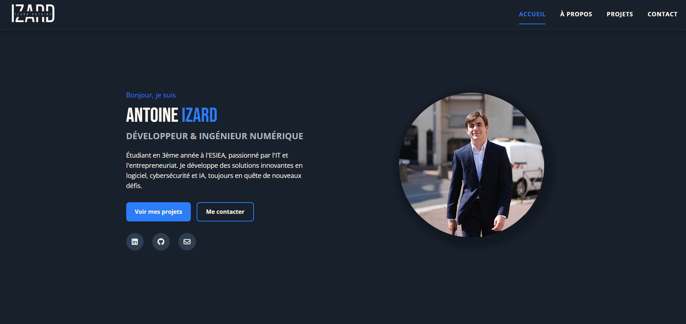
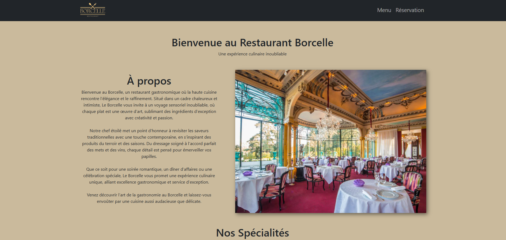
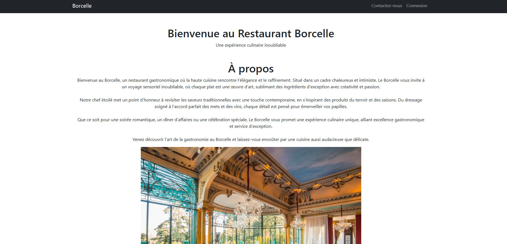
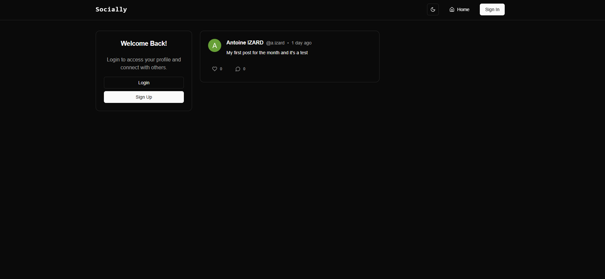
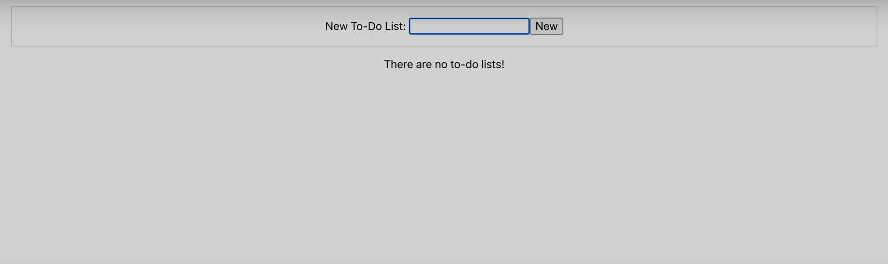
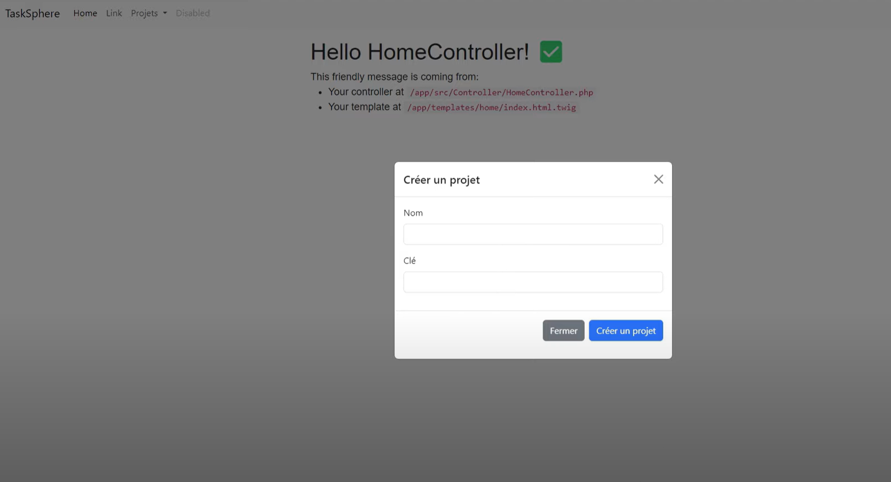

Mes projets

Portfolio
Ce portfolio que vous consultez actuellement, développé avec HTML, CSS et JavaScript pour présenter mes projets et compétences de manière professionnelle.
HTML5
CSS3
JavaScript

Site Restaurant Bootstrap
Site vitrine responsive pour un restaurant, développé avec Bootstrap, présentant le menu, les horaires, la localisation et un système de réservation de table.
HTML5
CSS3
Bootstrap

Système de Réservation
Application de gestion de réservations, base de données avec inscription et prise de rendez-vous.
PHP
MySQL
Bootstrap

Réseau Social
Application de réseau social avec authentification, messagerie instantanée, partage de médias et système de notifications en temps réel.
Symfony
Docker
MySQL
Bootstrap

Fast API
Application de gestion de tâches utilisant une API, à l'instar d'une ToDo-List.
Docker
Python
REST API

Gestion de Projet
Application de gestion de projet, suivi de tâches et collaboration en temps réel. Erreur lors de l'utilsation de LiveAction.
Symfony
Portainer
PHP
Twig